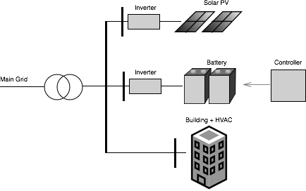

Microgrid Tutorial
First, make sure you have compiled and installed SmartGridToolbox. In this tutorial, we will be building a simulation of a microgrid that consists of a bus at the main grid connection, a simplified building with a HVAC system, a solar PV installation, a storage battery, and a microgrid controller. The main grid bus connects to each of the other components in the simulation, as shown below:
